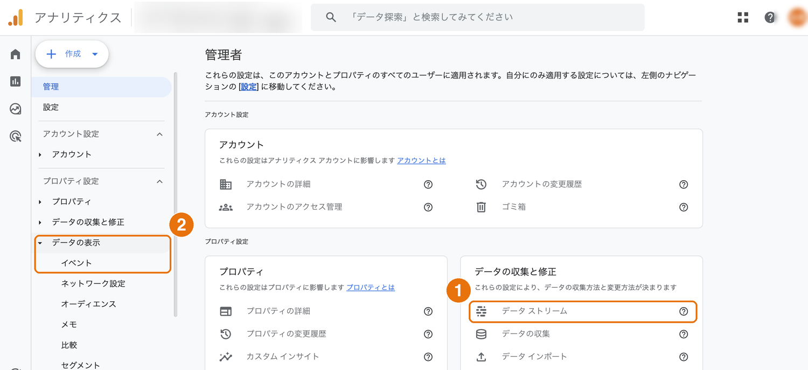
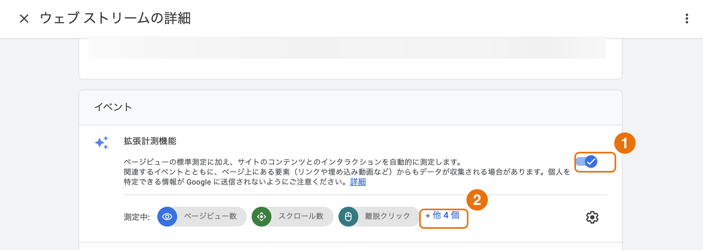
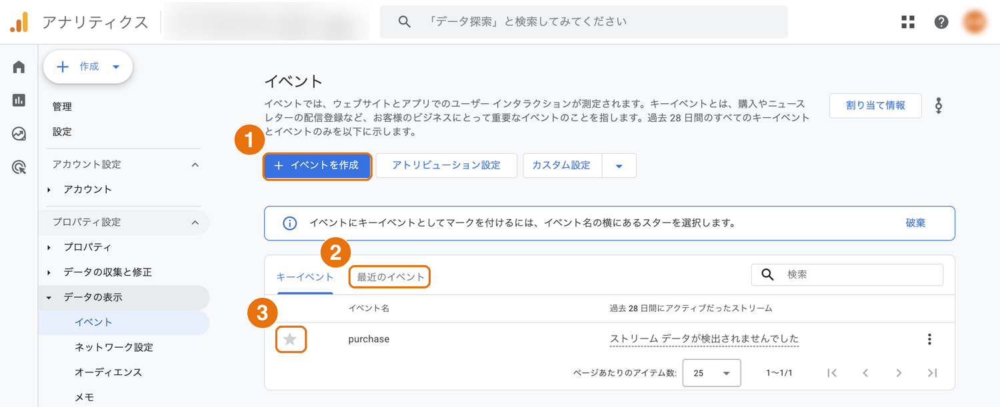

COLUMN
コラム
GA4の使い方｜最初に見る3つのレポートと、お問い合わせを数える設定
GA4（Googleアナリティクス4）は、サイトに来た人がどう動いたかを記録する道具です。画面が複雑で「入れてはいるが開いていない」という方も多いのですが、実際に使うのは全体のごく一部です。
本コラムでは、最初に見る3つのレポートと、お問い合わせを正しく数えるための設定を紹介します。
この記事でわかること
Q. サーチコンソールとどう使い分けるの？サーチコンソールは「来る前」、GA4は「来た後」です。検索でどう見つかったかはサーチコンソール、来てから何をしたかはGA4で見ます。
| 知りたいこと | 見る場所 |
|---|---|
| どんな検索ワードで表示されたか | サーチコンソール |
| 検索結果で何回クリックされたか | サーチコンソール |
| どのページがよく見られているか | GA4 |
| どこから来た人が多いか | GA4 |
| どのページからお問い合わせに進んだか | GA4 |
GA4の左メニューには多くの項目が並んでいますが、まずはこの3つで十分です。
レポート ＞ エンゲージメント ＞ ページとスクリーンで開きます。表示回数の多い順にページが並びます。
見るときのコツ
表の左上のプルダウンを「ページパス」に切り替えると、URLで並ぶので分かりやすくなります。ページタイトルのままだと、似た名前が並んで判別しづらいことがあります。
レポート ＞ エンゲージメント ＞ ランディングページです。「訪問者が最初に開いたページ」が分かります。
トップページから入る人ばかりとは限りません。ブログ記事から入る人のほうが多い、というのはよくあることです。入口になっているページに、次へ進む案内があるかを確認してください。
レポート ＞ 集客 ＞ トラフィック獲得です。検索・広告・SNSなど、流入元の内訳が分かります。詳しくは後述します。
GA4を入れただけでは、「何件お問い合わせがあったか」は分かりません。どの行動を成果とみなすかをGA4に教える必要があります。これがキーイベントの設定です。
Q. タグを埋め込む必要があるの？多くの場合、必要ありません。GA4の拡張計測機能がフォームの送信を自動で記録しているため、その記録に「成果」の印を付けるだけで済みます。



完了ページがある場合
送信後に「お問い合わせありがとうございました」のページへ移動する作りであれば、その完了ページの表示を成果として数えることもできます。どちらか一方で十分です。両方を数えると二重になるのでご注意ください。
フォームの送信内容そのものはメールやスプレッドシートで分かりますが、「どこから来た人か」はGA4でしか分かりません。ここが設定する価値です。
トラフィック獲得のレポートでは、次のような区分で表示されます。
| 区分 | 意味 |
|---|---|
| Organic Search | 検索結果から来た人（広告を除く） |
| Direct | URL直接入力・ブックマーク・計測できない流入 |
| Referral | 他サイトのリンクから来た人 |
| Paid Search | 検索広告から来た人 |
| Organic Social | SNSの投稿から来た人 |
Directは「URLを直接入力した人」と思われがちですが、実際には計測できなかった流入がまとめて入る枠です。メールのリンク、QRコード、一部のアプリ経由、そして営業目的の自動アクセスなども、ここに分類されます。
そのため、施策の効果を見たいときはDirectを除いて、Organic Searchに絞って見るのがおすすめです。本当にニーズがあって検索してきた人の動きが見えやすくなります。
絞り込みには、手早い方法とレポート全体に効かせる方法の2つがあります。
覚えておきたい使い分け
サイト全体の規模を把握したいときはDirectを含めた全体、施策が効いたかを判断したいときはOrganic Searchだけ。同じレポートでも、見たい目的によって絞り込みを切り替えてください。
社内の人がサイトを見た分も、そのままでは数字に入ります。アクセス数が少ないサイトほど影響が大きいため、自社のIPアドレスを除外する設定（管理 ＞ データストリーム ＞ タグ設定を行う ＞ 内部トラフィックの定義）をしておくと、数字が正確になります。
どちらで話しているかがずれると、認識が合わなくなります。社内で見るときは、どちらを使うか決めておくと混乱しません。
GA4の通常のレポートは、反映に24〜48時間ほどかかります。「いまの状況」を見たいときはリアルタイムのレポートを使いますが、こちらは直近30分のみが対象です。
すべての機能を覚える必要はありません。「どこから来た人が、どのページを見て、お問い合わせしたか」が追えるようになれば、改善の判断には十分使えます。
ご相談 計測の設定を相談する（無料）
弊社の資料をダウンロードしたい方は
下記よりダウンロードしてください。
ご相談・サービスに関する詳細情報やご不明点など
下記よりお気軽にお問い合わせください。